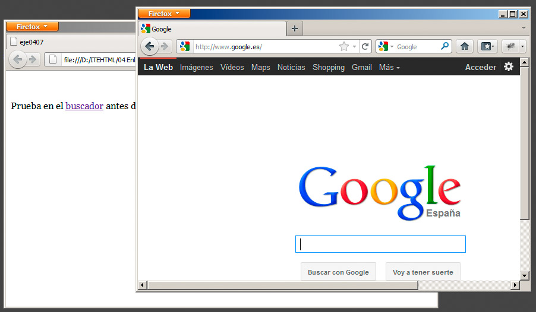

La siguiente dirección, por ejemplo, hace que la página web no se abra en la ventana habitual, sino en una ventana nueva o en una pestaña, dependiendo de nuestro navegador:
Prueba en el <a href="http://www.google.es" target="_blank">buscador</a>
El resultado se muestra en la figura siguiente:

Junto a _blank (abrir en pestaña nueva o ventana nueva ) y _self (que no se suele emplear porque es el valor predeterminado que indica que se abra en la misma ventana) contamos con _parent y _top, que indican que la página se debe abrir en el marco anterior o en el espacio principal de la página. Se suelen emplear al trabajar con los marcos que se crean con el elemento iframe, que permite mostrar páginas dentro de páginas. Lo trataremos más adelante.
Pregunta Verdadero-Falso
Verdadero Falso